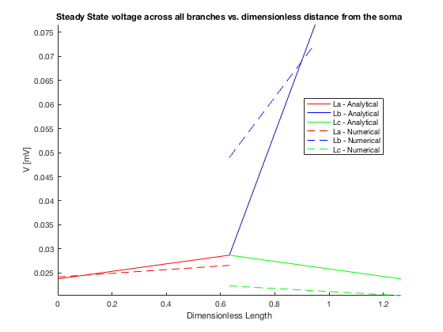
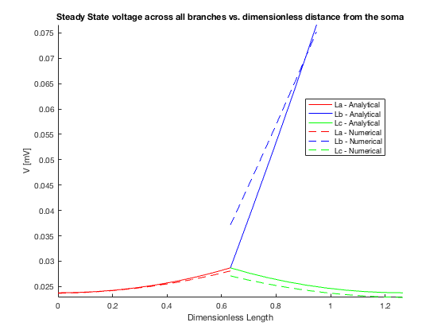
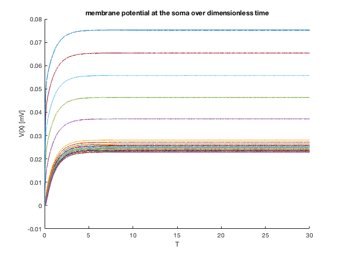
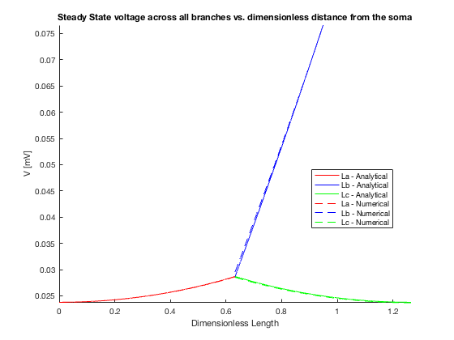
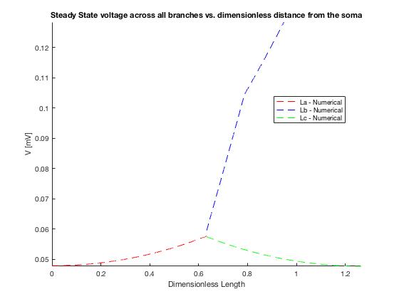

Contents
HW 4. Problem 2
Ri = 100; Rm = 10000; Cm = 1; Er = 0; Gi =1/Ri; Gm = 1/Rm; la = 0.1; lb = 0.025; lc = 0.05; ra = 0.0005; rb = 0.000125; rc = 0.000125; Iapp = 1e-9; num_comp_a = 2; %number of compartments in a num_comp_b = 2; num_comp_c = 2; ind_l_a = la/num_comp_a; ind_l_b = lb/num_comp_b; ind_l_c = lc/num_comp_c; A = NaN(1,num_comp_a); B = NaN(1,num_comp_b); C = NaN(1,num_comp_c); A(:) = ind_l_a; B(:) = ind_l_b; C(:) = ind_l_c; matrix_length_compartment =[A,B,C]; A(:) = ra; B(:) = rb; C(:) = rc; matrix_radius_compartment =[A,B,C]; gi = pi .* matrix_radius_compartment.^2 ./ matrix_length_compartment .* Gi; cj = 2*pi.*matrix_radius_compartment.*matrix_length_compartment*Cm; gjm = 2*pi.*matrix_radius_compartment.*matrix_length_compartment*Gm; n=num_comp_a+num_comp_b+num_comp_c; A = zeros(n,n); B = A; v = zeros(n,1); u = v; u(num_comp_a+num_comp_b,1)=Iapp; for i = 1:n B(i,i)=(1/cj(i)); if i == 1 %Initial mode A(i,i)=-(gjm(i)+gi(i+1))/cj(i); A(i,i+1)=gi(i+1)/cj(i); elseif i == num_comp_a %Prebranch mode A(i,i-1)= gi(i)/cj(i); A(i,i) =-(gi(i)+gjm(i)+gi(i+1)+gi(num_comp_a+num_comp_b+1))/cj(i); A(i,i+1)= gi(i+1)/cj(i); A(i,i+num_comp_b+1) = gi(i+num_comp_b+1)/cj(i); elseif i == num_comp_a+num_comp_b+1 %Afterbranch mode A(i,i-num_comp_b-1)= gi(i)/cj(i); A(i,i)=-(gi(i)+gjm(i)+gi(i+1))/cj(i); A(i,i+1)= gi(i+1)/cj(i); elseif i == num_comp_a+num_comp_b % End of the subbranch A(i,i-1)= gi(i)/cj(i); A(i,i) =-(gi(i)+gjm(i))/cj(i); elseif i == num_comp_a +num_comp_b+num_comp_c %End of the subbranch A(i,i-1)= gi(i)/cj(i); A(i,i)=-(gi(i)+gjm(i))/cj(i); else A(i,i-1)= gi(i)/cj(i); A(i,i)=-(gi(i)+gjm(i)+gi(i+1))/cj(i); A(i,i+1)= gi(i+1)/cj(i); end end v = -inv(A)*B*u; % i disp('For i, I directly wrote the matrix A in the loop so my answer is in my code') % iii disp('B=') disp(B) % iv disp('u=') disp(u)
For i, I directly wrote the matrix A in the loop so my answer is in my code
B=
1.0e+05 *
0.0637 0 0 0 0 0
0 0.0637 0 0 0 0
0 0 1.0186 0 0 0
0 0 0 1.0186 0 0
0 0 0 0 0.5093 0
0 0 0 0 0 0.5093
u=
1.0e-09 *
0
0
0
1.0000
0
0
(B)
Analytical
alambda = sqrt((ra*Rm)/(2*Ri)); blambda = sqrt((rb*Rm)/(2*Ri)); clambda = sqrt((rc*Rm)/(2*Ri)); La=la/alambda; Lb=lb/blambda; Lc=lc/clambda; Ga_inf =(pi*(ra^2))/(Ri*alambda); Gb_inf =(pi*(rb^2))/(Ri*blambda); Gc_inf =(pi*(rc^2))/(Ri*clambda); Gb_out = Ga_inf * tanh(La)+Gc_inf * tanh(Lc); Gb_in = Gb_inf * (Gb_out/Gb_inf+tanh(Lb))/(1+Gb_out/Gb_inf*tanh(Lb)); Vb_0 = Iapp/Gb_in; Va_0 = Vb_0 * 1/(cosh(Lb)+Gb_out/Gb_inf*sinh(Lb)); Vc_0 = Va_0; Va_X =@(X) Va_0 * cosh(La-X)/cosh(La); Vb_X =@(X) Vb_0 * (cosh(Lb-X)+(Gb_out/Gb_inf * sinh(Lb-X)))/(cosh(Lb)+(Gb_out/Gb_inf * sinh(Lb))); Vc_X =@(X) Vc_0 * cosh(Lc-X)/cosh(Lc); Xa = linspace(0,La,num_comp_a); Xb = linspace(0,Lb,num_comp_b); Xc = linspace(0,Lc,num_comp_c); preflip = Va_X(Xa); flip_Va = fliplr(preflip); preflip = Vb_X(Xb); flip_Vb = fliplr(preflip); copyvc = Vc_X(Xc); % Numerical (Compartmental) V = zeros(n,2); V(:,1) = v; for i = 1: num_comp_a V(i,2)=(ind_l_a/alambda)*i; end for i = num_comp_a+1 : num_comp_a + num_comp_b V(i,2)=2*(ind_l_a/alambda)+(ind_l_b/blambda)*(n-num_comp_a); end for i = num_comp_a+num_comp_b+1 : num_comp_a+num_comp_b+num_comp_c V(i,2)=2*(ind_l_a/alambda)+(ind_l_c/clambda)*(n-num_comp_a-num_comp_b); end figure; clf; hold on %%%%%%%%%%%%%%%%%%%%%%%%%%%%%%%%%%%%%%%%%%%%%%%%%%%%%%% plot(Xa,flip_Va,'r','DisplayName','La - Analytical') plot(Xb+La,flip_Vb,'b','DisplayName','Lb - Analytical') plot(Xc+La,copyvc,'g','DisplayName','Lc - Analytical') %%%%%%%%%%%%%%%%%%%%%%%%%%%%%%%%%%%%%%%%%%%%%%%%%%%%%%% plot(Xa,V(1:num_comp_a,1),'r--','DisplayName','La - Numerical') plot(Xb+La,V(num_comp_a+1 : num_comp_a + num_comp_b,1),'b--','DisplayName','Lb - Numerical') plot(Xc+La,V(num_comp_a+num_comp_b+1 : num_comp_a+num_comp_b+num_comp_c,1),... 'g--','DisplayName','Lc - Numerical'); %%%%%%%%%%%%%%%%%%%%%%%%%%%%%%%%%%%%%%%%%%%%%%%%%%%%%%% legend('Show', 'Location', 'Best') xlabel('Dimensionless Length'); ylabel('V [mV]'); title('Steady State voltage across all branches vs. dimensionless distance from the soma'); axis tight; axis manual disp('The numerical solution does not match completely with the anayltical solution because of the small number of compartments but the trend is similar')
The numerical solution does not match completely with the anayltical solution because of the small number of compartments but the trend is similar
(C)
num_comp_a_min = ceil(la/(alambda*0.1)); num_comp_b_min = ceil(lb/(blambda*0.1)); num_comp_c_min = ceil(lc/(clambda*0.1)); disp('the minimum number of compartments in A is') disp(num_comp_a_min) disp('the minimum number of compartments in B is') disp(num_comp_b_min) disp('the minimum number of compartments in C is') disp(num_comp_c_min)
the minimum number of compartments in A is
7
the minimum number of compartments in B is
4
the minimum number of compartments in C is
7
(D)
num_comp_a = 10; %number of compartments in a num_comp_b = 5; num_comp_c = 10; ind_l_a = la/num_comp_a; ind_l_b = lb/num_comp_b; ind_l_c = lc/num_comp_c; A = NaN(1,num_comp_a); B = NaN(1,num_comp_b); C = NaN(1,num_comp_c); A(:) = ind_l_a; B(:) = ind_l_b; C(:) = ind_l_c; matrix_length_compartment =[A,B,C]; A(:) = ra; B(:) = rb; C(:) = rc; matrix_radius_compartment =[A,B,C]; gi = pi .* matrix_radius_compartment.^2 ./ matrix_length_compartment .* Gi; cj = 2*pi.*matrix_radius_compartment.*matrix_length_compartment*Cm; gjm = 2*pi.*matrix_radius_compartment.*matrix_length_compartment*Gm; n=num_comp_a+num_comp_b+num_comp_c; A = zeros(n,n); B = A; v = zeros(n,1); u = v; u(num_comp_a+num_comp_b,1)=Iapp; for i = 1:n B(i,i)=(1/cj(i)); if i == 1 %Initial mode A(i,i)=-(gjm(i)+gi(i+1))/cj(i); A(i,i+1)=gi(i+1)/cj(i); elseif i == num_comp_a %Prebranch mode A(i,i-1)= gi(i)/cj(i); A(i,i) =-(gi(i)+gjm(i)+gi(i+1)+gi(num_comp_a+num_comp_b+1))/cj(i); A(i,i+1)= gi(i+1)/cj(i); A(i,i+num_comp_b+1) = gi(i+num_comp_b+1)/cj(i); elseif i == num_comp_a+num_comp_b+1 %Afterbranch mode A(i,i-num_comp_b-1)= gi(i)/cj(i); A(i,i)=-(gi(i)+gjm(i)+gi(i+1))/cj(i); A(i,i+1)= gi(i+1)/cj(i); elseif i == num_comp_a+num_comp_b % End of the subbranch A(i,i-1)= gi(i)/cj(i); A(i,i) =-(gi(i)+gjm(i))/cj(i); elseif i == num_comp_a +num_comp_b+num_comp_c %End of the subbranch A(i,i-1)= gi(i)/cj(i); A(i,i)=-(gi(i)+gjm(i))/cj(i); else A(i,i-1)= gi(i)/cj(i); A(i,i)=-(gi(i)+gjm(i)+gi(i+1))/cj(i); A(i,i+1)= gi(i+1)/cj(i); end end v = -inv(A)*B*u; % Analytical alambda = sqrt((ra*Rm)/(2*Ri)); blambda = sqrt((rb*Rm)/(2*Ri)); clambda = sqrt((rc*Rm)/(2*Ri)); La=la/alambda; Lb=lb/blambda; Lc=lc/clambda; Ga_inf =(pi*(ra^2))/(Ri*alambda); Gb_inf =(pi*(rb^2))/(Ri*blambda); Gc_inf =(pi*(rc^2))/(Ri*clambda); Gb_out = Ga_inf * tanh(La)+Gc_inf * tanh(Lc); Gb_in = Gb_inf * (Gb_out/Gb_inf+tanh(Lb))/(1+Gb_out/Gb_inf*tanh(Lb)); Vb_0 = Iapp/Gb_in; Va_0 = Vb_0 * 1/(cosh(Lb)+Gb_out/Gb_inf*sinh(Lb)); Vc_0 = Va_0; Va_X =@(X) Va_0 * cosh(La-X)/cosh(La); Vb_X =@(X) Vb_0 * (cosh(Lb-X)+(Gb_out/Gb_inf * sinh(Lb-X)))/(cosh(Lb)+(Gb_out/Gb_inf * sinh(Lb))); Vc_X =@(X) Vc_0 * cosh(Lc-X)/cosh(Lc); Xa = linspace(0,La,num_comp_a); Xb = linspace(0,Lb,num_comp_b); Xc = linspace(0,Lc,num_comp_c); preflip = Va_X(Xa); flip_Va = fliplr(preflip); preflip = Vb_X(Xb); flip_Vb = fliplr(preflip); copyvc = Vc_X(Xc); % Numerical (Compartmental) V = zeros(num_comp_a+num_comp_b+num_comp_c,2); V(:,1) = v; for i = 1: num_comp_a V(i,2)=(ind_l_a/alambda)*i; end for i = num_comp_a+1 : num_comp_a + num_comp_b V(i,2)=2*(ind_l_a/alambda)+(ind_l_b/blambda)*(n-num_comp_a); end for i = num_comp_a+num_comp_b+1 : num_comp_a+num_comp_b+num_comp_c V(i,2)=2*(ind_l_a/alambda)+(ind_l_c/clambda)*(n-num_comp_a-num_comp_b); end figure; clf; hold on %%%%%%%%%%%%%%%%%%%%%%%%%%%%%%%%%%%%%%%%%%%%%%%%%%%%%%% plot(Xa,flip_Va,'r','DisplayName','La - Analytical') plot(Xb+La,flip_Vb,'b','DisplayName','Lb - Analytical') plot(Xc+La,copyvc,'g','DisplayName','Lc - Analytical') %%%%%%%%%%%%%%%%%%%%%%%%%%%%%%%%%%%%%%%%%%%%%%%%%%%%%%% plot(Xa,V(1:num_comp_a,1),'r--','DisplayName','La - Numerical') plot(Xb+La,V(num_comp_a+1 : num_comp_a + num_comp_b,1),'b--','DisplayName','Lb - Numerical') plot(Xc+La,V(num_comp_a+num_comp_b+1 : num_comp_a+num_comp_b+num_comp_c,1),... 'g--','DisplayName','Lc - Numerical'); %%%%%%%%%%%%%%%%%%%%%%%%%%%%%%%%%%%%%%%%%%%%%%%%%%%%%%% legend('Show', 'Location', 'Best') xlabel('Dimensionless Length'); ylabel('V [mV]'); title('Steady State voltage across all branches vs. dimensionless distance from the soma'); axis tight; axis manual disp('the answer in D has better fitting between the analytical solution and the numerical solution compare with part B, although the analytical solution does not match up with the numerical solution completely. This is because there are more compartments')
the answer in D has better fitting between the analytical solution and the numerical solution compare with part B, although the analytical solution does not match up with the numerical solution completely. This is because there are more compartments
(E)
dvdt =@(V1) A*V1+ B*u; t_span =linspace(0,3e5,100000); V0 = zeros(1,n); tc = Rm * Cm; [t,V1]=ode23(@(t,V1) dvdt(V1),t_span,V0); figure;clf; hold on; xlabel('T'); ylabel('V(X) [mV]'); title('membrane potential at the soma over dimensionless time') for i = 1:n plot(t/tc,V1(:,i)) end
(F)
num_comp_a = 100; %number of compartments in a num_comp_b = 50; num_comp_c = 100; ind_l_a = la/num_comp_a; ind_l_b = lb/num_comp_b; ind_l_c = lc/num_comp_c; A = NaN(1,num_comp_a); B = NaN(1,num_comp_b); C = NaN(1,num_comp_c); A(:) = ind_l_a; B(:) = ind_l_b; C(:) = ind_l_c; matrix_length_compartment =[A,B,C]; A(:) = ra; B(:) = rb; C(:) = rc; matrix_radius_compartment =[A,B,C]; gi = pi .* matrix_radius_compartment.^2 ./ matrix_length_compartment .* Gi; cj = 2*pi.*matrix_radius_compartment.*matrix_length_compartment*Cm; gjm = 2*pi.*matrix_radius_compartment.*matrix_length_compartment*Gm; n=num_comp_a+num_comp_b+num_comp_c; A = zeros(n,n); B = A; v = zeros(n,1); u = v; u(num_comp_a+num_comp_b,1)=Iapp; for i = 1:n B(i,i)=(1/cj(i)); if i == 1 %Initial mode A(i,i)=-(gjm(i)+gi(i+1))/cj(i); A(i,i+1)=gi(i+1)/cj(i); elseif i == num_comp_a %Prebranch mode A(i,i-1)= gi(i)/cj(i); A(i,i) =-(gi(i)+gjm(i)+gi(i+1)+gi(num_comp_a+num_comp_b+1))/cj(i); A(i,i+1)= gi(i+1)/cj(i); A(i,i+num_comp_b+1) = gi(i+num_comp_b+1)/cj(i); elseif i == num_comp_a+num_comp_b+1 %Afterbranch mode A(i,i-num_comp_b-1)= gi(i)/cj(i); A(i,i)=-(gi(i)+gjm(i)+gi(i+1))/cj(i); A(i,i+1)= gi(i+1)/cj(i); elseif i == num_comp_a+num_comp_b % End of the subbranch A(i,i-1)= gi(i)/cj(i); A(i,i) =-(gi(i)+gjm(i))/cj(i); elseif i == num_comp_a +num_comp_b+num_comp_c %End of the subbranch A(i,i-1)= gi(i)/cj(i); A(i,i)=-(gi(i)+gjm(i))/cj(i); else A(i,i-1)= gi(i)/cj(i); A(i,i)=-(gi(i)+gjm(i)+gi(i+1))/cj(i); A(i,i+1)= gi(i+1)/cj(i); end end v = -inv(A)*B*u; % Analytical alambda = sqrt((ra*Rm)/(2*Ri)); blambda = sqrt((rb*Rm)/(2*Ri)); clambda = sqrt((rc*Rm)/(2*Ri)); La=la/alambda; Lb=lb/blambda; Lc=lc/clambda; Ga_inf =(pi*(ra^2))/(Ri*alambda); Gb_inf =(pi*(rb^2))/(Ri*blambda); Gc_inf =(pi*(rc^2))/(Ri*clambda); Gb_out = Ga_inf * tanh(La)+Gc_inf * tanh(Lc); Gb_in = Gb_inf * (Gb_out/Gb_inf+tanh(Lb))/(1+Gb_out/Gb_inf*tanh(Lb)); Vb_0 = Iapp/Gb_in; Va_0 = Vb_0 * 1/(cosh(Lb)+Gb_out/Gb_inf*sinh(Lb)); Vc_0 = Va_0; Va_X =@(X) Va_0 * cosh(La-X)/cosh(La); Vb_X =@(X) Vb_0 * (cosh(Lb-X)+(Gb_out/Gb_inf * sinh(Lb-X)))/(cosh(Lb)+(Gb_out/Gb_inf * sinh(Lb))); Vc_X =@(X) Vc_0 * cosh(Lc-X)/cosh(Lc); Xa = linspace(0,La,num_comp_a); Xb = linspace(0,Lb,num_comp_b); Xc = linspace(0,Lc,num_comp_c); preflip = Va_X(Xa); flip_Va = fliplr(preflip); preflip = Vb_X(Xb); flip_Vb = fliplr(preflip); copyvc = Vc_X(Xc); % Numerical (Compartmental) V = zeros(num_comp_a+num_comp_b+num_comp_c,2); V(:,1) = v; for i = 1: num_comp_a V(i,2)=(ind_l_a/alambda)*i; end for i = num_comp_a+1 : num_comp_a + num_comp_b V(i,2)=2*(ind_l_a/alambda)+(ind_l_b/blambda)*(n-num_comp_a); end for i = num_comp_a+num_comp_b+1 : num_comp_a+num_comp_b+num_comp_c V(i,2)=2*(ind_l_a/alambda)+(ind_l_c/clambda)*(n-num_comp_a-num_comp_b); end figure; clf; hold on %%%%%%%%%%%%%%%%%%%%%%%%%%%%%%%%%%%%%%%%%%%%%%%%%%%%%%% plot(Xa,flip_Va,'r','DisplayName','La - Analytical') plot(Xb+La,flip_Vb,'b','DisplayName','Lb - Analytical') plot(Xc+La,copyvc,'g','DisplayName','Lc - Analytical') %%%%%%%%%%%%%%%%%%%%%%%%%%%%%%%%%%%%%%%%%%%%%%%%%%%%%%% plot(Xa,V(1:num_comp_a,1),'r--','DisplayName','La - Numerical') plot(Xb+La,V(num_comp_a+1 : num_comp_a + num_comp_b,1),'b--','DisplayName','Lb - Numerical') plot(Xc+La,V(num_comp_a+num_comp_b+1 : num_comp_a+num_comp_b+num_comp_c,1),... 'g--','DisplayName','Lc - Numerical'); %%%%%%%%%%%%%%%%%%%%%%%%%%%%%%%%%%%%%%%%%%%%%%%%%%%%%%% legend('Show', 'Location', 'Best') xlabel('Dimensionless Length'); ylabel('V [mV]'); title('Steady State voltage across all branches vs. dimensionless distance from the soma'); axis tight; axis manual disp('The numerical solution fits with the analytical solution very well. It has better fitting compared with the plot in part B')
The numerical solution fits with the analytical solution very well. It has better fitting compared with the plot in part B
(G)
num_comp_a = 100; %number of compartments in a num_comp_b = 50; num_comp_c = 100; ind_l_a = la/num_comp_a; ind_l_b = lb/num_comp_b; ind_l_c = lc/num_comp_c; A = NaN(1,num_comp_a); B = NaN(1,num_comp_b); C = NaN(1,num_comp_c); A(:) = ind_l_a; B(:) = ind_l_b; C(:) = ind_l_c; matrix_length_compartment =[A,B,C]; A(:) = ra; B(:) = rb; C(:) = rc; matrix_radius_compartment =[A,B,C]; gi = pi .* matrix_radius_compartment.^2 ./ matrix_length_compartment .* Gi; cj = 2*pi.*matrix_radius_compartment.*matrix_length_compartment*Cm; gjm = 2*pi.*matrix_radius_compartment.*matrix_length_compartment*Gm; n=num_comp_a+num_comp_b+num_comp_c; A = zeros(n,n); B = A; v = zeros(n,1); u = v; u(num_comp_a+num_comp_b/2,1)=Iapp; u(num_comp_a+num_comp_b,1)=Iapp; for i = 1:n B(i,i)=(1/cj(i)); if i == 1 %Initial mode A(i,i)=-(gjm(i)+gi(i+1))/cj(i); A(i,i+1)=gi(i+1)/cj(i); elseif i == num_comp_a %Prebranch mode A(i,i-1)= gi(i)/cj(i); A(i,i) =-(gi(i)+gjm(i)+gi(i+1)+gi(num_comp_a+num_comp_b+1))/cj(i); A(i,i+1)= gi(i+1)/cj(i); A(i,i+num_comp_b+1) = gi(i+num_comp_b+1)/cj(i); elseif i == num_comp_a+num_comp_b+1 %Afterbranch mode A(i,i-num_comp_b-1)= gi(i)/cj(i); A(i,i)=-(gi(i)+gjm(i)+gi(i+1))/cj(i); A(i,i+1)= gi(i+1)/cj(i); elseif i == num_comp_a+num_comp_b % End of the subbranch A(i,i-1)= gi(i)/cj(i); A(i,i) =-(gi(i)+gjm(i))/cj(i); elseif i == num_comp_a +num_comp_b+num_comp_c %End of the subbranch A(i,i-1)= gi(i)/cj(i); A(i,i)=-(gi(i)+gjm(i))/cj(i); else A(i,i-1)= gi(i)/cj(i); A(i,i)=-(gi(i)+gjm(i)+gi(i+1))/cj(i); A(i,i+1)= gi(i+1)/cj(i); end end v = -inv(A)*B*u; % Analytical alambda = sqrt((ra*Rm)/(2*Ri)); blambda = sqrt((rb*Rm)/(2*Ri)); clambda = sqrt((rc*Rm)/(2*Ri)); La=la/alambda; Lb=lb/blambda; Lc=lc/clambda; Ga_inf =(pi*(ra^2))/(Ri*alambda); Gb_inf =(pi*(rb^2))/(Ri*blambda); Gc_inf =(pi*(rc^2))/(Ri*clambda); Gb_out = Ga_inf * tanh(La)+Gc_inf * tanh(Lc); Gb_in = Gb_inf * (Gb_out/Gb_inf+tanh(Lb))/(1+Gb_out/Gb_inf*tanh(Lb)); Vb_0 = Iapp/Gb_in; Va_0 = Vb_0 * 1/(cosh(Lb)+Gb_out/Gb_inf*sinh(Lb)); Vc_0 = Va_0; Va_X =@(X) Va_0 * cosh(La-X)/cosh(La); Vb_X =@(X) Vb_0 * (cosh(Lb-X)+(Gb_out/Gb_inf * sinh(Lb-X)))/(cosh(Lb)+(Gb_out/Gb_inf * sinh(Lb))); Vc_X =@(X) Vc_0 * cosh(Lc-X)/cosh(Lc); Xa = linspace(0,La,num_comp_a); Xb = linspace(0,Lb,num_comp_b); Xc = linspace(0,Lc,num_comp_c); preflip = Va_X(Xa); flip_Va = fliplr(preflip); preflip = Vb_X(Xb); flip_Vb = fliplr(preflip); copyvc = Vc_X(Xc); % Numerical (Compartmental) V = zeros(num_comp_a+num_comp_b+num_comp_c,2); V(:,1) = v; for i = 1: num_comp_a V(i,2)=(ind_l_a/alambda)*i; end for i = num_comp_a+1 : num_comp_a + num_comp_b V(i,2)=2*(ind_l_a/alambda)+(ind_l_b/blambda)*(n-num_comp_a); end for i = num_comp_a+num_comp_b+1 : num_comp_a+num_comp_b+num_comp_c V(i,2)=2*(ind_l_a/alambda)+(ind_l_c/clambda)*(n-num_comp_a-num_comp_b); end figure; clf; hold on plot(Xa,V(1:num_comp_a,1),'r--','DisplayName','La - Numerical') plot(Xb+La,V(num_comp_a+1 : num_comp_a + num_comp_b,1),'b--','DisplayName','Lb - Numerical') plot(Xc+La,V(num_comp_a+num_comp_b+1 : n,1),... 'g--','DisplayName','Lc - Numerical'); %%%%%%%%%%%%%%%%%%%%%%%%%%%%%%%%%%%%%%%%%%%%%%%%%%%%%%% legend('Show', 'Location', 'Best') xlabel('Dimensionless Length'); ylabel('V [mV]'); title('Steady State voltage across all branches vs. dimensionless distance from the soma'); axis tight; axis manual